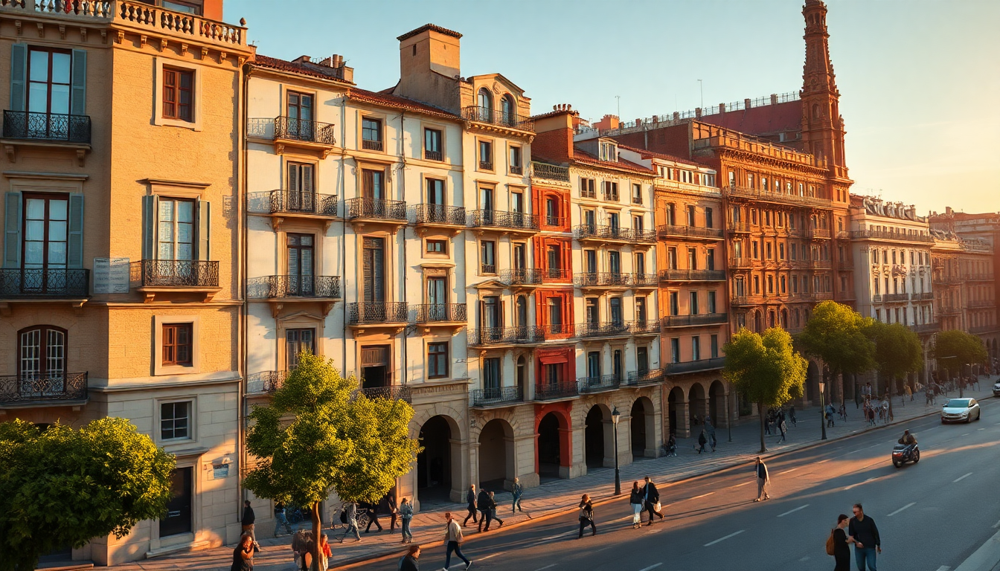

Where to Stay in Barcelona: Best Neighborhoods for Every Budget

I’ve spent six weeks over three trips walking Barcelona’s streets, making mistakes so you don’t have to. The first time I booked a room near Las Ramblas because it seemed central. Big error: I couldn’t sleep, paid too much for mediocre tapas, and spent half my time dodging selfie sticks. Here’s the real breakdown of where to stay, block by block, based on what you actually want to do and spend.
Which Neighborhood Is Best for First-Time Visitors?
If it’s your first trip and you want to be in the thick of it without hating your life, stay in El Born or El Raval (the quieter edges). Both are walking distance to the Gothic Quarter but have better food and fewer crowds.
- El Born — narrow medieval streets, independent boutiques, and the Picasso Museum. We stayed at Hotel Banys Orientals — small rooms but a rooftop terrace that saves you after a long day.
- El Raval (north end) — edgier but authentic. Casa Camper has a free 24-hour snack bar and a rooftop with views of the Boqueria market. Avoid the southern end near the port after dark.
- Gothic Quarter (Carrer de Ferran area) — only if you want to be steps from the cathedral. Noise is constant. Hotel Colón has direct views of the cathedral facade, but bring earplugs.
Skip Las Ramblas entirely for sleeping. The central stretch is a tourist trap corridor with overpriced paella and pickpockets working the crowds.
What’s the Best Neighborhood for Nightlife and Young Travelers?
El Born and Gràcia are your answers, but they feel completely different after dark.
- El Born — bars spill onto the streets around Plaça de les Olles and Plaça de la Llana. Drinks cost €8–12. Try La Vinya del Senyor for cava and tapas on a candlelit square. It gets loud until 2 AM, so book a hotel with good soundproofing.
- Gràcia — this is where locals go. The vibe is more laid-back, with plazas like Plaça del Sol and Plaça de la Vila de Gràcia packed with people drinking €3 beers from corner shops. Hostal Gràcia is a budget gem — clean, quiet rooms above a bakery, and you’re a 15-minute metro ride from the beach.
For clubbing, you’ll need to head to Port Olímpic or Razzmatazz (a massive club in Poblenou). Don’t stay near the port unless you want drunk tourists stumbling past your window at 6 AM.
Where Should Families and Couples Stay for a Quieter Trip?
Gràcia (again) and Eixample Dreta are the best bets. Both are safe, walkable, and have proper restaurants (not tourist menus).
- Eixample Dreta — wide grid streets, modernist architecture (Casa Batlló, La Pedrera), and upscale dining. We booked Hotel Casa Fuster — a Modernista building with a pool and a jazz bar. It’s expensive but worth it for the quiet. Families do well at The Mirror Barcelona, which has family rooms and a pool.
- Gràcia (south end) — closer to the metro and less chaotic. Hotel Villa Emilia has a rooftop pool and a restaurant that does a weekend brunch locals actually go to. Walk to Park Güell in 20 minutes — skip the paid monument zone, the free parts are just as good.
Avoid the Barceloneta beachfront for sleeping. The apartments are noisy, the sand is packed, and the seafood restaurants along the boardwalk are overpriced. Go for a day trip, not a base.
What’s the Best Budget Neighborhood That Isn’t a Hostel?
Poblenou and the Sant Antoni area of Eixample offer real value without feeling like you’re in a dorm.
- Poblenou — former industrial zone turned hipster hub. You get modern apartments, a quieter beach (Nova Icària), and the Rambla del Poblenou — a tree-lined street with bakeries, markets, and €10 lunch menus. We stayed at Hotel SB Diagonal Zero — a 4-star for the price of a 3-star, with a rooftop pool and sea views.
- Sant Antoni — just west of the main Eixample, this neighborhood has the Mercat de Sant Antoni (a massive local market with a book fair on Sundays). Hotel Market is a solid mid-range option with a rooftop bar. You’re a 10-minute walk to Las Ramblas but pay half the price.
For hostels, Casa Gràcia in Gràcia is the best I’ve found — clean, social without being a party hostel, and they do free walking tours of the neighborhood.
Is the Eixample Neighborhood Worth the Higher Price?
Yes, if you value space, quiet, and architecture. Eixample is the 19th-century grid district split into two halves: Dreta (right) and Esquerra (left). Dreta is pricier and more touristy; Esquerra is more local and affordable.
- Eixample Esquerra — our pick for the sweet spot. Hotel Antiga Casa is a restored townhouse with a courtyard garden. Walk to La Boqueria market in 15 minutes. The neighborhood has Cal Pep for seafood (be prepared to queue) and Bar Mut for excellent tapas without the tourist markup.
- Eixample Dreta — if you want to be near the main sights. Majestic Hotel & Spa is the classic choice, but Hotel Praktik Bakery is more fun — they have a pastry shop in the lobby and free croissants each morning.
The downside? Eixample is a lot of walking. The blocks are long, and the metro stations (Passeig de Gràcia, Diagonal) are spread out. Bring comfortable shoes.
What About Staying Near the Beach in Barceloneta or Port Olímpic?
I’ll be blunt: don’t. Barceloneta is a working-class neighborhood that’s been overrun by tourist apartments and rowdy bars. The beach itself is fine for a day, but the area around it is loud, smells like fried food, and has some of the worst-value restaurants in the city.
- Port Olímpic — purpose-built for the 1992 Olympics, now a strip of chain restaurants and nightclubs. Hotel Arts Barcelona is a 5-star with a pool and spa, but you’re isolated from the real city.
- Nova Icària beach (in Poblenou) — better. Quieter, cleaner, and the restaurants along Carrer de la Marina are actually good. W Barcelona is the iconic sail-shaped hotel on the far end, but it’s a splurge and feels separate from everything.
If you must be beach-adjacent, stay in Poblenou and walk to the water. Otherwise, pick a central neighborhood and metro to the beach in 20 minutes.
Which Neighborhood Has the Best Food Scene?
Gràcia and El Born win this hands down, but for different reasons.
- Gràcia — family-run tapas bars and no tourist menus. La Pepita does creative montaditos (small sandwiches) for €4 each. El Glop is a local institution for grilled meats and botifarra (Catalan sausage). The Mercat de la Llibertat is a gorgeous early-20th-century market with a great seafood stall and a vermouth bar.
- El Born — more international and trendy. El Xampanyet is a classic cava bar that’s been open since 1929 — stand at the counter and order anchovies and olives. Calle Flassaders has a string of restaurants with outdoor seating; Bormuth does good tapas and has a rooftop.
For a splurge, Disfrutar in Eixample Esquerra is a two-Michelin-star experience that’s actually worth the money. Book months ahead.
FAQ
Is Barcelona safe for solo travelers? Yes, but stay aware. Pickpocketing is common in tourist-heavy areas like Las Ramblas, the Gothic Quarter, and on the metro. Keep your phone in a front pocket or a zipped bag. I never felt unsafe walking alone at night in Gràcia or Eixample, but I’d avoid El Raval south of Carrer de l’Hospital after midnight. Use the same street smarts you would in any big city.
What’s the best way to get from the airport to my hotel? The Aerobus is the cheapest and easiest option — €6.50 one-way, runs every 5-10 minutes, and drops you at Plaça de Catalunya (center of the city). From there, you can metro or walk to most neighborhoods. A taxi costs €30–40 flat rate. Skip the train unless you’re staying near the Sants station; it’s slower and less frequent.
Should I book a hotel or an apartment in Barcelona? Hotels are better for service and security; apartments are better for space and cooking. I’ve done both. Apartments in El Born or Gràcia work well for groups or families, but check reviews for noise and the host’s responsiveness. Hotels like Hotel Banys Orientals or Casa Camper give you a front desk and a safe place to leave bags. Avoid short-term rentals in buildings with a lot of tourist turnover — they often have thin walls and unreliable Wi-Fi.
Conclusion
- Stay in El Born or Gràcia for the best mix of food, atmosphere, and walkability — they’re worth the slightly higher price.
- Eixample Esquerra offers quiet, space, and value if you don’t mind a longer walk to the Gothic Quarter.
- Skip Las Ramblas and Barceloneta for sleeping — they’re tourist traps that compromise your comfort and budget.
- Use the Aerobus from the airport and the metro (T10 card) to get around — it’s faster and cheaper than taxis.
- Book a hotel with a rooftop terrace if you can — Barcelona’s evenings are made for sitting outside with a glass of cava.